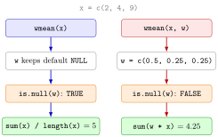

Default Arguments in Your Own Functions¶
Definition¶
In a function definition, an argument written as name = value has a default value:
If a call does not supply w, the body uses w = NULL; if it does, the supplied value replaces the default. An argument without a default is required: a call that leaves it out stops with the error argument "w" is missing, with no default as soon as the body uses it. The special value NULL (the empty object) is often used as a default meaning "not supplied", checked in the body with is.null().
Interpretation¶
Defaults make the common case short and the special case possible. A weighted-mean function with w = NULL returns the ordinary mean when called as wmean(x) and the weighted mean when called as wmean(x, w), so one function covers both jobs without forcing you to type equal weights every time.

The figure follows Example 1 with x = c(2, 4, 9). On the left, w is not supplied, keeps its default NULL, the test is.null(w) is TRUE and the function returns sum(x) / length(x), which is 5. On the right, w = c(0.5, 0.25, 0.25) replaces the default, the test is FALSE and the function returns sum(w * x), which is 4.25.
Built-in functions work the same way, as in mean(x, na.rm = FALSE) (see function arguments), and your own defaults are matched by position or by name like theirs. Choose a default that is the right answer for most calls, such as a threshold of 0 or na_rm = FALSE. When the sensible default depends on the data, NULL plus an is.null() test in an if–else statement lets the body work it out. Arguments are only evaluated when the body uses them, which is why a missing required argument causes an error only at that moment.
A common mistake is relying on the position of later arguments after skipping one: in proportion_above(x, TRUE) the value TRUE goes to the second argument t, not to na_rm. Name such arguments in the call: proportion_above(x, na_rm = TRUE).
Key Results¶
function(x, w = NULL)makeswoptional; a supplied value always replaces the default.- An argument without default is required; leaving it out gives an error once the body uses it.
NULLdefaults combined withif (is.null(w)) ... else ...let one function handle "argument given" and "argument not given" differently.- Arguments are matched by position or by name; after skipping an optional argument, name the ones that follow.
- Defaults such as
na_rm = FALSEcan be passed on to built-ins, for examplemean(x, na.rm = na_rm).
Examples¶
1. A weighted mean with a NULL default. The weights must be nonnegative and sum to one:
wmean <- function(x, w = NULL) {
if (is.null(w)) {
out <- sum(x) / length(x)
} else {
out <- sum(w * x)
}
return(out)
}
x <- c(2, 4, 9)
wmean(x)
#> [1] 5
wmean(x, w = c(0.5, 0.25, 0.25))
#> [1] 4.25
With weights , , the weighted mean is .
2. Several defaults. The share of elements strictly above a threshold t, with control over missing values:
proportion_above <- function(x, t = 0, na_rm = FALSE) {
mean(x > t, na.rm = na_rm)
}
proportion_above(c(-1, 3, 5))
#> [1] 0.6666667
x <- c(1, 2, NA, 4)
proportion_above(x, t = 2)
#> [1] NA
proportion_above(x, t = 2, na_rm = TRUE)
#> [1] 0.3333333
The mean of a logical vector is the share of TRUE values. With na_rm = TRUE the missing value is dropped from both the count and the total, giving 1 out of 3.
3. Pitfall: a required argument left out. Without a default, the weights must be supplied:
wmean2 <- function(x, w) {
sum(w * x)
}
wmean2(c(2, 4, 9))
#> Error in wmean2(c(2, 4, 9)) : argument "w" is missing, with no default
4. Pitfall: skipping by position. Here TRUE is matched to t, the second argument, and is treated as the number 1:
The second call names na_rm, so t keeps its default 0 and all three non-missing values count as above it.
Prerequisites¶
Related Concepts¶
Sources¶
- Programming for EOR · Week 3
- Lecture 3, Part 2 Functions and Recursion, section "Input arguments and defaults"; Solutions Week 3, Part 2 Exercises 1–2
Aliases: default argument, default value, optional argument, NULL default, is.null, is.null(), missing argument Keywords: arg = default, NULL as "not supplied", is.null() check, required arguments
Last updated: 10 November 2026 16:43
Default Arguments in Your Own FunctionsWriting FunctionsFunction Arguments and Defaultsif–else StatementReturn ValuesMissing ValuesSummary Statistics in RFunction Environment